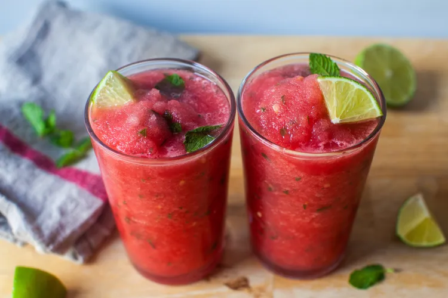

Freezing your watermelon in cubes and foregoing the ice cubes is summer drink brilliance. It actually tastes like watermelon because you haven’t diluted it in any way. The texture is fantastic enough that you might skip the club soda too (but adding a splash basically makes it a grown-up Slurpee; you’re welcome). Simple syrup, and the water involved in making it, is never necessary if you can just dissolve sugar in your lime juice. I’ve made it as straight frosty watermelon lemonade and limeade (no rum; keep the mint if you wish) but as a heatwave balm of a summer drink that takes approximately 65 seconds* to make, it’s downright revolutionary.
This makes an absolutely fantastic frozen watermelon limeade or lemonade too, simply skip the rum, leave the mint if you wish. It makes two drinks in an 11 to 12-ounce glass.